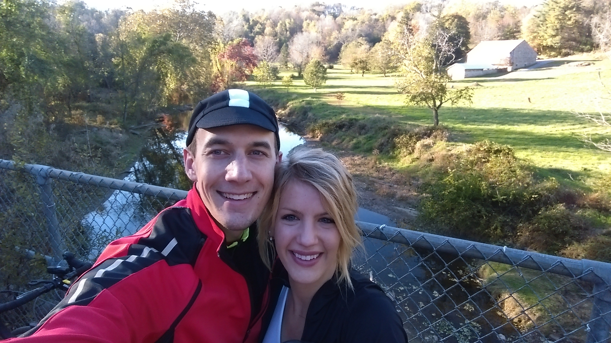

Cycling: The 1-year Update
In the past 52 weeks, I've ridden 4,700 miles, 3,045 of which are "car replacement" miles, which are miles that I would have otherwise driven in a car. The other ~1,650 were for fun. What a great year it's been. 52 weeks of riding almost every day. I started riding my bike primarily as an economical choice, with physical fitness being a strong 2nd motivator. I still ride for those same reasons, but I've also found that I simply love to bike, and those initial motivators have, in some sense, become secondary to my simple love of cycling.
I frequently find myself daydreaming about rides. On beautiful days, I would find myself planning out a longer route on my way home so I could spend more time on my bike. I've been thinking about why it is that cycling has so rapidly become a defining piece of my lifestyle. I'd like to try to summarize some of the big players.
One of the primary reasons I ride is that cycling is an irresistible cocktail of mental, physical, and mechanical challenges. The mental challenges are riddled throughout, from making the decision to ride in to work through the rain and snow on a cold day, to willing yourself to keep pumping your legs up a climb, even though they burn so badly, and the top seems so far away.
Many of the mental challenges are obvious, and overcoming them will take you far. But the physical challenges are a bit more nuanced, and will only show up after many of the mental hurdles are passed. The physical challenges are more along the lines of how can I make my body stronger? How can I put more power to the pedals? Can I train my body to climb that never-ending hill faster? Can my body last for a 100 mile ride? The solution for these challenges, of course, is to train your body. Ride more, ride harder, ride smarter. These things cause noticeable physical changes to your body. They make your muscles and your cardiovascular system stronger, more resilient, and more efficient. These changes are what get you up the hill faster, and what get you further down the road.
Then there are the mechanical challenges. How do I change a flat? What are the optimal tires for my riding? How do I adjust a derailleur for silky-smooth shifting? How do I change a cassette? What's the optimal gearing for my terrain and riding? How do I keep my bike clean? What components/upgrades are the best bang for my buck? I find that there is something almost therapeutic about taking care of the machine that takes care of you. There is also satisfaction to be found in understanding the tools of the trade, and knowing how to fix or adjust things when they need fixing or adjusting. I suppose it's probably not all that different for me than it is for those who fall in love with modifying, tuning, and maintaining their car/vehicle. Cars just haven't brought me nearly as much enjoyment through driving as bicycles have through riding. :)
Thankfully, cycling is far more than just challenges. There are wonderful people who give cycling an invaluable social aspect. Some of my coworkers also like to ride bikes, and so we have become friends through that, and spend time riding together. There is a thriving cycling community in the Howard County area, which gives cyclists a sense of belonging, through group rides, parties, conversations, and advocacy.
Finally, there is just the cycling itself. The rhythm of your legs, the whir of your tires, the breeze on your face, the scenery moving by. If you let it, it can be incredibly relaxing -- almost meditative. Combine that with some endorphins... and you'll find that cycling can make you feel just pretty darn good. Cycling also has it's purely exhilarating moments, like riding through the Maryland countryside, taking in the beautiful sights (trees, farms, mountain overlooks, etc.) and smells, or bombing down a hill at 50+ mph, or getting pulled along with a group of fast riders, faster than you could go by yourself. I'm addicted.
I recently bought another bike -- it's a true road bike, as opposed to my cyclocross bike that I turned into a hardcore commuter. My plan is to use it to try a bit of racing next year. One of my friends, also a cyclist, said, "I hope you like hospital food." Should be fun. :)
I'm working out the mechanical challenges (new bike), and putting together a training plan to set some new physical challenges. The mental challenges will come as the days get even shorter, the weather worsens, and the workouts become sufferfests. Fortunately, there are other people to ride with. It will be rewarding to overcome the myriad challenges. Racing will be exhilarating. I'm hopeful that the next year will be even more enjoyable than this past year has been.
Here are some photos from the past year of cycling, somewhat haphazardly organized:
Beautiful snow
The reason I bought studded tires for this winter...
Giving my bike a wash in our 3rd-floor apartment
Log on the trail
Sidewall cut
Marks in the bridge from where I fell. Bridges are slippery when wet!

Entering the glorious world of clipless and padded shorts
Outer Banks, NC -- sailboats
Outer Banks, NC -- lighthouse selfie
Beautiful morning commute
Maryland countryside
Frederick cycling -- beautiful views
Frederick cycling -- beautiful views
Frederick cycling -- countryside
Frederick cycling -- caterpillar!
Rode down to D.C. and back with some friends
Frozen yogurt!
NCR Trail -- bikes
NCR Trail -- farm
NCR Trail -- selfie with the wife. :) 